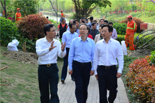

市城管委召开2017年第一次会议市
时间：2018-04-13
为总结经验，剖析问题、明确任务、部署工作，2月17日上午，市城管委召开2017年第一次会议。市常务副市长杨建新，市政府副秘书长忻忠华参加了会议。
会议上首先举行了市综合执法局的授牌仪式。随后，市政府副秘书长忻忠华对2016年示范街巷、网格化管理、数字城管工作考核情况进行了通报。吴兴区政府、开发区管委会及太湖旅游度假区管委会等部门作表态发言。
会议上首先举行了市综合执法局的授牌仪式。随后，市政府副秘书长忻忠华对2016年示范街巷、网格化管理、数字城管工作考核情况进行了通报。吴兴区政府、开发区管委会及太湖旅游度假区管委会等部门作表态发言。